Chapter 2 Making beautiful charts in Python
2.2 Importing python packages
Let’s load in some libraries that we will use again and again when making charts.
import matplotlib.pyplot as plt
import matplotlib.dates as mdates
import pandas as pd
import numpy as np
import statistics
from scipy.stats import norm
from matplotlib.ticker import EngFormatter, StrMethodFormatter2.3 Importing and cleaning data
#Note non-ascii character in csv will stuff up the import, so we add this term: encoding='unicode_escape'
# Note: The full file location is this:
# /Users/charlescoverdale/Documents/2021/Python_code_projects/learning_journal_v0-1/MEL_weather_2019.csv
# Import csv
df_weather= pd.read_csv("MEL_weather_2019.csv",encoding='unicode_escape')
# Create a single data column and bind to df
df_weather['Date'] = pd.to_datetime(df_weather[['Year', 'Month', 'Day']])
# Drop the original three field date columns
df_weather = df_weather.drop(columns=['Year', 'Month', 'Day'])
# Let's change the name of the solar exposure column
df_weather = df_weather.rename({'Daily global solar exposure (MJ/m*m)':'Solar_exposure',
'Rainfall amount (millimetres)':'Rainfall',
'Maximum temperature (°C)': 'Max_temp'},
axis=1)
#Add a rolling average
df_weather['Rolling_avg'] = df_weather['Max_temp'].rolling(window=7).mean()
df_weather.head()
# Now let's plot maximum temperature on a line chartplt.plot(df_weather['Date'], df_weather['Max_temp'],
label='Maximum temperature',
color='blue',
alpha=0.2,
linewidth=1.0,
marker='')
plt.plot(df_weather['Date'], df_weather['Rolling_avg'],
label='7-day moving average',
color='red',
linewidth=1.0,
marker='')
plt.title('Maximum temperature in Melbourne (2019)', fontsize=12)
plt.xlabel('', fontsize=10)
plt.gca().xaxis.set_major_formatter(mdates.DateFormatter('%b'))
plt.gca().xaxis.set_major_locator(mdates.MonthLocator(interval=1))
#plt.margins(x=0)
plt.ylabel('', fontsize=10)
plt.gca().yaxis.set_major_formatter(StrMethodFormatter(u"{x:.0f}°C"))
plt.gca().spines['top'].set_visible(False)
plt.gca().spines['bottom'].set_visible(True)
plt.gca().spines['right'].set_visible(False)
plt.gca().spines['left'].set_visible(False)
plt.tick_params(
axis='x', # changes apply to the x-axis
which='both', # both major and minor ticks are affected
bottom=False, # ticks along the bottom edge are off
top=False, # ticks along the top edge are off
labelbottom=True) # labels along the bottom edge are off
plt.tick_params(
axis='y', # changes apply to the y-axis
which='both', # both major and minor ticks are affected
left=False, # ticks along the bottom edge are off
right=False, # ticks along the top edge are off
labelleft=True) # labels along the bottom edge are off
plt.grid(False)
plt.gca().yaxis.grid(True)
plt.legend(fancybox=False, framealpha=1, shadow=False, borderpad=1)
plt.savefig('weather_chart_save.png',dpi=300,bbox_inches='tight')
plt.show()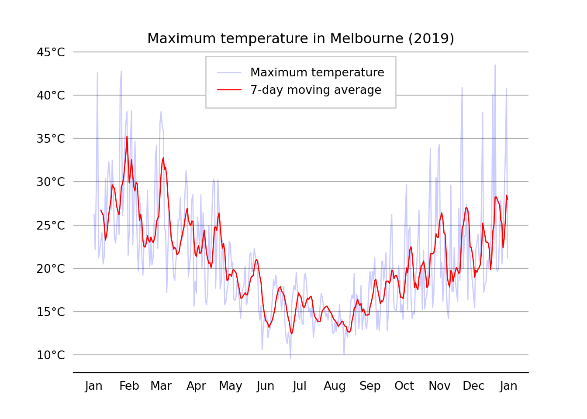
2.4 Bar charts
# Chart 1: Bar plot
# Get data
country = ['USA', 'Canada', 'Germany', 'UK', 'France']
GDP_per_capita = [45,40,38,16,10]
# Create plot
plt.bar(country, GDP_per_capita, width=0.8, align='center',color='blue', edgecolor = 'black')
# Labels and titlesplt.title('GDP per capita of select OECD countries')
plt.xlabel('Test x label')
plt.ylabel('')
#A dd bar annotations to barchart
# Location for the annotated text
i = 1.0
j = 1.0
# Annotating the bar plot with the values (total death count)
for i in range(len(country)):
plt.annotate(GDP_per_capita[i], (-0.1 + i, GDP_per_capita[i] + j))
# Creating the legend of the bars in the plot
plt.legend(labels = ['GDP_per_capita'])
# Remove y the axis
plt.yticks([])
# plt.savefig('test_bar_plot.png',dpi=300,bbox_inches='tight')
# Show plot
plt.show()
# Saving the plot as a 'png'
#plt.savefig('testbarplot.png')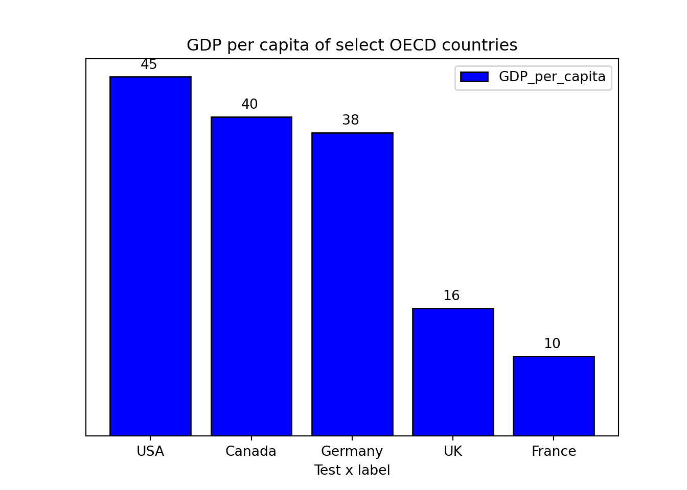
2.5 Stacked bar charts
labels = ['Group 1', 'Group 2', 'Group 3', 'Group 4', 'Group 5']
men_means = [20, 35, 30, 35, 27]
women_means = [25, 32, 34, 20, 25]
men_std = [2, 3, 4, 1, 2]
women_std = [3, 5, 2, 3, 3]
width = 0.7 # the width of the bars: can also be len(x) sequence
fig, ax = plt.subplots()
ax.bar(labels, men_means, width, yerr=men_std, label='Men')ax.bar(labels, women_means, width, yerr=women_std, bottom=men_means,
label='Women')ax.set_ylabel('Scores')
ax.set_title('Scores by group and gender')
ax.legend()
plt.show()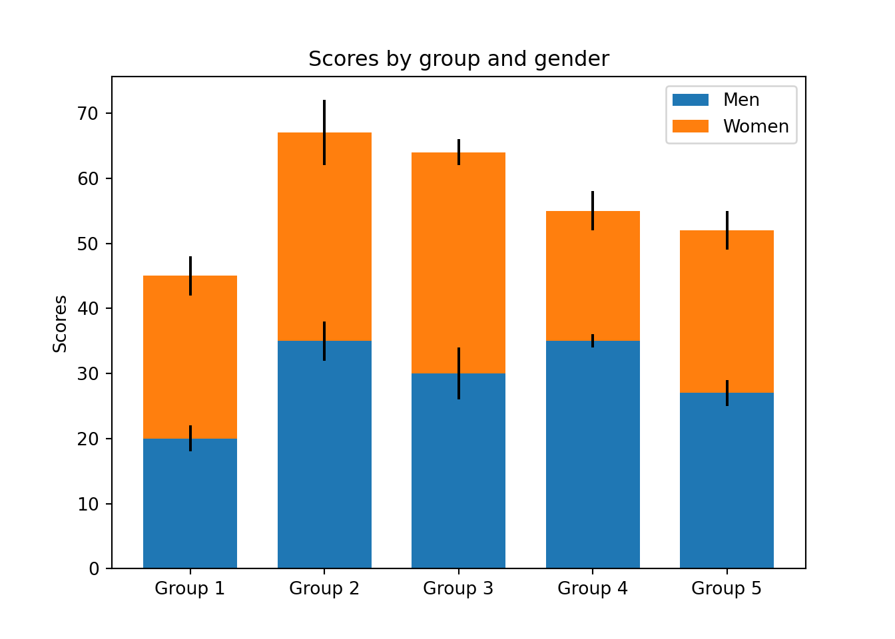
2.6 Line charts
import matplotlib.ticker as mtick
# Note: you can also get the same result without using a pandas dataframe
#Year = [1920,1930,1940,1950,1960,1970,1980,1990,2000,2010]
#Unemployment_Rate = [9.8,12,8,7.2,6.9,7,6.5,6.2,5.5,6.3]
#Using a pandas dataframe
Data = {'Year': [1920,1930,1940,1950,1960,1970,1980,1990,2000,2010],
'Unemployment_Rate': [9.8,12,8,7.2,6.9,7,6.5,6.2,5.5,6.3]
}
df = pd.DataFrame(Data,columns=['Year','Unemployment_Rate'])
#Add in a % sign to a new variable
#df['Unemployment_Rate_Percent'] = df['Unemployment_Rate'].astype(str) + '%'
plt.plot(df['Year'], df['Unemployment_Rate'], color='blue', marker='o')
plt.title('Unemployment rate (1920-2010)', fontsize=12)
plt.xlabel('Year', fontsize=12)
plt.ylabel('', fontsize=12)
#plt.grid(False)
plt.gca().yaxis.grid(True)
plt.gca().yaxis.set_major_formatter(mtick.PercentFormatter())
plt.show()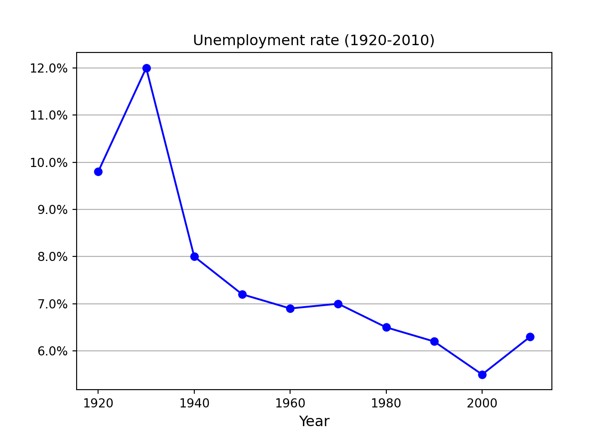
2.7 Scatter plot
x =[5, 7, 8, 7, 2, 17, 2, 9,
4, 11, 12, 9, 6]
y =[99, 86, 87, 88, 100, 86,
103, 87, 94, 78, 77, 85, 86]
plt.scatter(x, y, c ="blue")
plt.title('Scatterplot title', fontsize=12)
plt.xlabel('x label', fontsize=12)
plt.ylabel('y label', fontsize=12)
plt.show()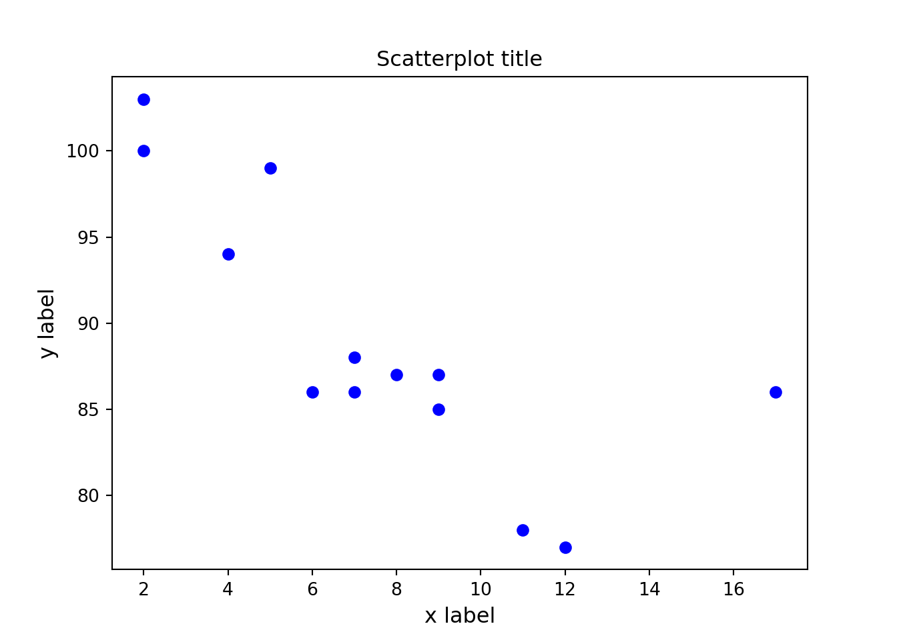
2.8 Histogram
np.random.seed(99)
# Using the format np.random.normal(mu, sigma, 1000)
x = np.random.normal(0,1,size=1000)
# Use density=False for counts, and density=True for probability
plt.hist(x, density=False, bins=100)
# Plot mean lineplt.axvline(x.mean(), color='k', linestyle='dashed', linewidth=1)
plt.ylabel('Probability')
plt.xlabel('Mean');
plt.show()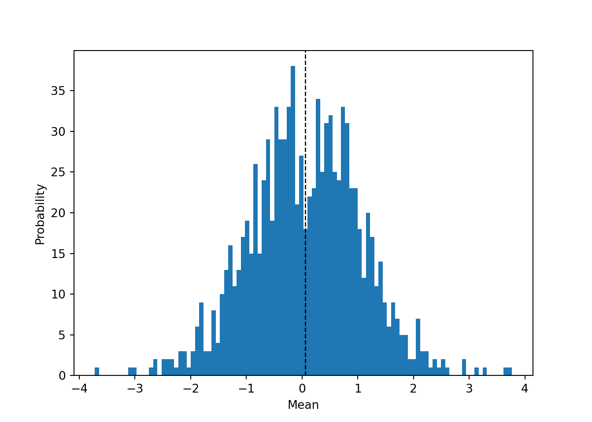
2.9 Multiple charts in single plot
fig, (ax,ax2) = plt.subplots(ncols=2)
ax.plot([0,1],[-35,30])
ax.yaxis.set_major_formatter(EngFormatter(unit=u"°C"))
ax2.plot([0,1],[-35,30])
ax2.yaxis.set_major_formatter(StrMethodFormatter(u"{x:.0f} °C"))
plt.tight_layout()
plt.show()
2.10 Annotating charts
Example taken from the wonderful blog at Practical Economics.
plt.title('Employment Impact of a Minimum Wage')
# Set limits of chart
plt.xlim(10,70)plt.ylim(130,200)
# Wage supply floorplt.plot([10,30],[150,150],color='orange')
plt.text(10.5,140.0,"Marginal\nDisutility\nof Labour",size=8,color='black')
plt.plot([10,40],[160,160],color='lightgrey',linestyle='--')
plt.plot([40,40],[130,160],color='lightgrey',linestyle='--')
plt.annotate('', xy=(30,138),xytext=(40,138),arrowprops = dict(arrowstyle='<->'))
plt.text(31,140,"Employment\nLoss",size=8, color='k')
plt.axhspan(170,150,xmin=0.0,xmax=20/60,alpha=0.9,color='dodgerblue')
plt.annotate('Additional Surplus to\nEmployed', xy=(20,162),xytext=(30,185),arrowprops = dict(arrowstyle='->'))
# Deadweight loss triangles
trianglex=[30,30,40,30]
triangley=[150,170,160,150]
plt.plot(trianglex,triangley, color='grey')
plt.fill(trianglex,triangley,color='grey')
# Main box
plt.plot([10,30],[170,170],'tab:orange')
plt.plot([30,30],[130,170],'tab:green')
#plt.plot([50,50],[130,170],'tab:red')
plt.text(11,171,"Wage Rate",size=8,color='black')
plt.annotate('Deadweight\nLoss', xy=(32,162),xytext=(38,175),arrowprops = dict(arrowstyle='->'))
#Labour Demand Curve
plt.plot([20,60],[180,140],color='tab:grey')
plt.text(61,135,"Marginal\nProduct\nof Labour\nDemand",size=8,color='black')
#Labour Supply Curve
plt.plot([20,60],[140,180],color='tab:grey')
plt.text(61,180,"Labour\nSupply",size=8,color='k')
plt.show()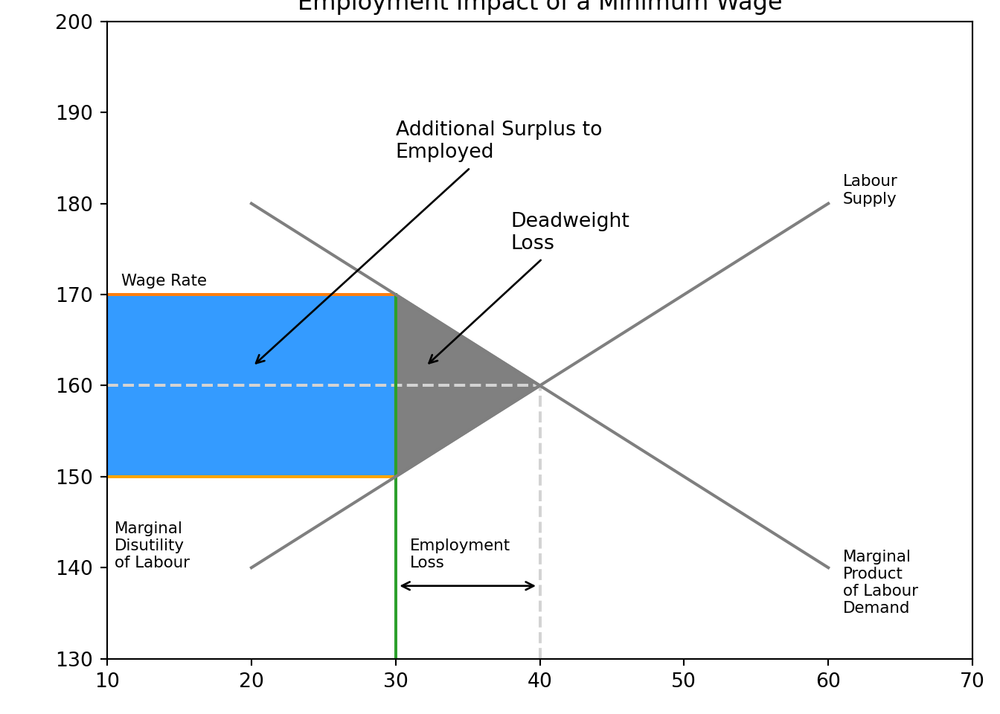
2.12 Importing python packages
Let’s load in some libraries that we will use again and again when making charts.
import matplotlib.pyplot as plt
import matplotlib.dates as mdates
import pandas as pd
import geopandas as gpd
import numpy as np
import statistics
from scipy.stats import norm
from matplotlib.ticker import EngFormatter, StrMethodFormatter2.13 Making simple maps with geopandas
Just like a pandas dataframe, the geopandas package allows us to us shapefiles.
We’ll go ahead and download some shapefiles from the ABS.
# Read the SHP file
SA4_shp = gpd.read_file('ASGS/SA4_2021_AUST_SHP_GDA2020/SA4_2021_AUST_GDA2020.shp')
# Load the data using Geopandas
SA4_shp.head()
# Check the coordinate reference system attached to the shapefile## SA4_CODE21 ... geometry
## 0 101 ... MULTIPOLYGON (((150.05261 -37.26253, 150.05251...
## 1 102 ... MULTIPOLYGON (((151.31497 -33.55578, 151.31496...
## 2 103 ... POLYGON ((150.14236 -32.34153, 150.14255 -32.3...
## 3 104 ... MULTIPOLYGON (((153.07639 -30.42982, 153.07645...
## 4 105 ... POLYGON ((148.67619 -29.50976, 148.67662 -29.5...
##
## [5 rows x 13 columns]SA4_shp.crs
# Filter the data for only Greater Melbourne## <Geographic 2D CRS: EPSG:7844>
## Name: GDA2020
## Axis Info [ellipsoidal]:
## - Lat[north]: Geodetic latitude (degree)
## - Lon[east]: Geodetic longitude (degree)
## Area of Use:
## - name: Australia including Lord Howe Island, Macquarie Island, Ashmore and Cartier Islands, Christmas Island, Cocos (Keeling) Islands, Norfolk Island. All onshore and offshore.
## - bounds: (93.41, -60.55, 173.34, -8.47)
## Datum: Geocentric Datum of Australia 2020
## - Ellipsoid: GRS 1980
## - Prime Meridian: GreenwichSA4_shp_MEL = SA4_shp[SA4_shp['GCC_NAME21']=='Greater Melbourne']
SA4_shp_MEL.head()
# Quick plot of the shapefile## SA4_CODE21 ... geometry
## 35 206 ... POLYGON ((145.02062 -37.75442, 145.02307 -37.7...
## 36 207 ... POLYGON ((145.16229 -37.73770, 145.16243 -37.7...
## 37 208 ... POLYGON ((145.07352 -37.99858, 145.07339 -37.9...
## 38 209 ... POLYGON ((145.05522 -37.28651, 145.05547 -37.2...
## 39 210 ... POLYGON ((144.95001 -37.51126, 144.95029 -37.5...
##
## [5 rows x 13 columns]SA4_shp_MEL.plot(figsize=(20, 20), linewidth=0.1, edgecolor='0.9', legend = True)
plt.annotate('Melbourne\nCBD',
xy=(144.96246,-37.81214),
xytext=(144.46246,-38.21),
arrowprops = dict(arrowstyle='-'))
plt.title("SA2's of Greater Melbourne", fontsize=12)
plt.gca().axis('off')## (144.25640123076812, 145.95565667355476, -38.56936930909917, -37.10869135259332)plt.show()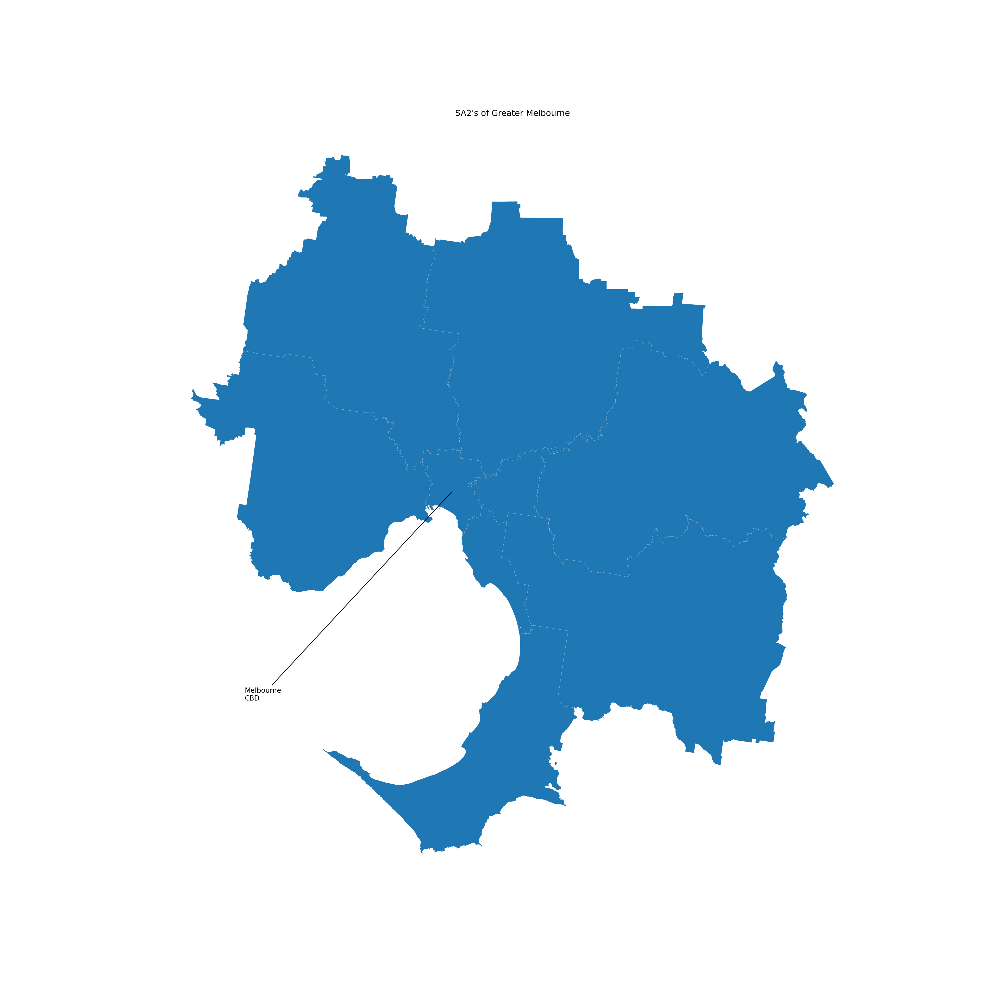
Here’s another example using a shapefile for WA
# Load Geometry File
WA_shp = gpd.read_file('data/NOV21_WA_LOC_POLYGON_shp_GDA2020/wa_localities.shp')
WA_shp.plot(figsize=(20, 20), linewidth=0.1, color='green', edgecolor='0.9', legend = True)
plt.title("Western Australia", fontsize=12)
plt.gca().axis('off')## (112.11683913762016, 129.80597943076583, -36.204830200778254, -12.669598716628517)plt.show()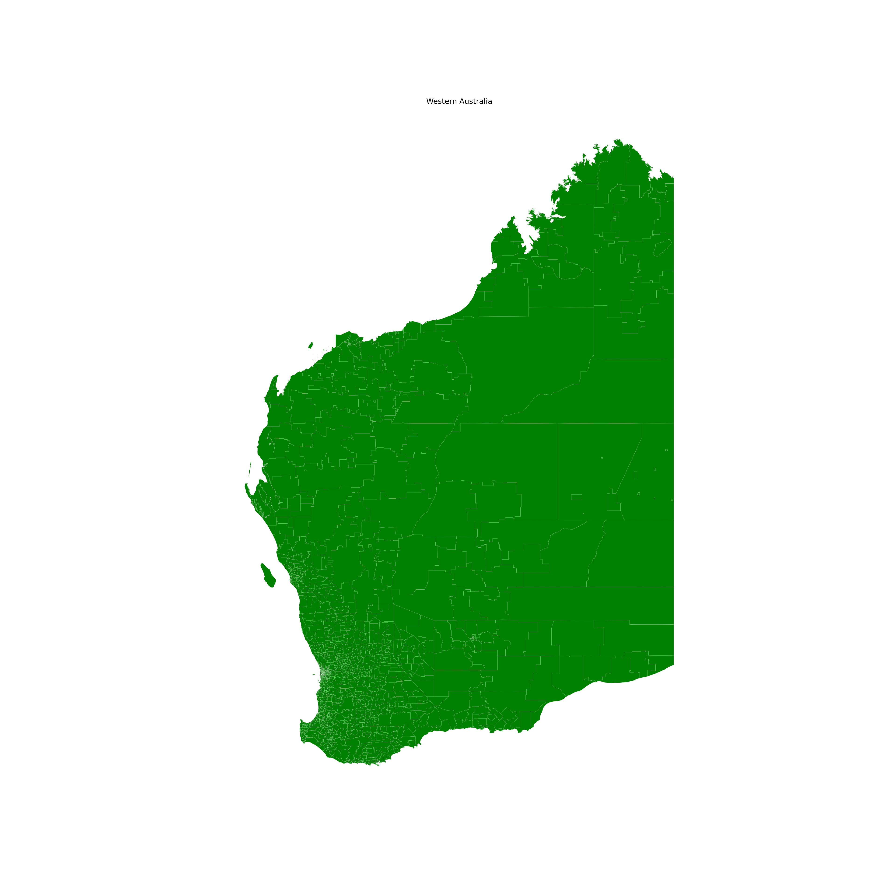
2.14 Geocoding address data
Using Nominatim to find the coordinates of a street address
from geopy.geocoders import Nominatim
geolocator = Nominatim(user_agent="coverdale")
test_location = geolocator.geocode("150 Collins Street, Melbourne Australia")
print(test_location.address)## 150, Collins Street, Melbourne, City of Melbourne, Victoria, 3000, Australiaprint(test_location.latitude, test_location.longitude)## -37.81457022418258 144.96896311671355print(test_location.raw)## {'place_id': 19898577, 'licence': 'Data © OpenStreetMap contributors, ODbL 1.0. https://osm.org/copyright', 'osm_type': 'way', 'osm_id': 87337974, 'boundingbox': ['-37.814620224183', '-37.814520224183', '144.96891311671', '144.96901311671'], 'lat': '-37.81457022418258', 'lon': '144.96896311671355', 'display_name': '150, Collins Street, Melbourne, City of Melbourne, Victoria, 3000, Australia', 'class': 'place', 'type': 'house', 'importance': 0.5309999999999999}Using Nominatim to find the street address from a set of coordinates
from geopy.geocoders import Nominatim
geolocator = Nominatim(user_agent="coverdale")
test_location = geolocator.reverse("-37.81214, 144.96246")
print(test_location.address)## 280, Elizabeth Street, Melbourne Innovation District, Melbourne, City of Melbourne, Victoria, 3000, Australiaprint(test_location.latitude, test_location.longitude)## -37.8121701209085 144.9623730375179print(test_location.raw)## {'place_id': 20040922, 'licence': 'Data © OpenStreetMap contributors, ODbL 1.0. https://osm.org/copyright', 'osm_type': 'way', 'osm_id': 88318376, 'lat': '-37.8121701209085', 'lon': '144.9623730375179', 'display_name': '280, Elizabeth Street, Melbourne Innovation District, Melbourne, City of Melbourne, Victoria, 3000, Australia', 'address': {'house_number': '280', 'road': 'Elizabeth Street', 'commercial': 'Melbourne Innovation District', 'suburb': 'Melbourne', 'city': 'Melbourne', 'municipality': 'City of Melbourne', 'state': 'Victoria', 'postcode': '3000', 'country': 'Australia', 'country_code': 'au'}, 'boundingbox': ['-37.812220120908', '-37.812120120908', '144.96232303752', '144.96242303752']}We can also use geopy to find the distance between two points
Geopy can calculate geodesic distance between two points using the geodesic distance or the great-circle distance, with a default of the geodesic distance available as the function geopy.distance.distance.
#Here's an example usage of the geodesic distance:
from geopy.distance import geodesic
sydney = (-37.81214, 144.96246)
melbourne = (-33.8688, 151.2093)
print(geodesic(sydney, melbourne).kilometers)
# Using great-circle distance:## 713.8082136217063from geopy.distance import great_circle
sydney = (-37.81214, 144.96246)
melbourne = (-33.8688, 151.2093)
print(great_circle(sydney, melbourne).kilometers)## 713.3784038434918Note we see a slight difference in the km measurement (around 500m) - this is due to the earth not being exactly spherical.
Geocoding a list of addresses
hospital_data_clean = hospital_data.dropna()
# Split out the points into latitude and longitude
hospital_data_clean[[‘lat,’ ‘lon,’ ‘altitude’]] = pd.DataFrame(hospital_data[‘point’].to_list(), index=hospital_data.index)
# View dataframe
hospital_data_clean.head(5)
# Import necessary modules
import geopy
import geocoder
import geopandas as gpd
from shapely.geometry import Point
from geopandas.tools import geocode
from geopy.geocoders import Nominatim
geolocator = Nominatim(user_agent="coverdale")
from geopy.extra.rate_limiter import RateLimiter
geocode = RateLimiter(geolocator.geocode, min_delay_seconds=1)
# Read the data
hospital_data = pd.read_csv("data/QLD_public_hospitals.csv",
on_bad_lines='skip',
encoding='unicode_escape')
hospital_data.head(5)
# Add the state and country to the data## Hospital and Health Service ... Fax Number
## 0 Cairns and Hinterland ... (07) 4091 0401
## 1 Cairns and Hinterland ... (07) 4067 1641
## 2 Cairns and Hinterland ... (07) 4031 1168
## 3 Cairns and Hinterland ... (07) 4043 3199
## 4 Cairns and Hinterland ... (07) 4096 2451
##
## [5 rows x 6 columns]hospital_data['Address'] = hospital_data['Address'].astype(str) + ", Queensland, Australia"
# Find the location
hospital_data['location'] = hospital_data['Address'].apply(geocode)
# Turn the location into a point## RateLimiter caught an error, retrying (0/2 tries). Called with (*('1 Victoria Street, St George, 4487, Queensland, Australia',), **{}).
## Traceback (most recent call last):
## File "/Users/charlescoverdale/Library/r-miniconda/envs/r-reticulate/lib/python3.10/site-packages/urllib3/connectionpool.py", line 445, in _make_request
## six.raise_from(e, None)
## File "<string>", line 3, in raise_from
## File "/Users/charlescoverdale/Library/r-miniconda/envs/r-reticulate/lib/python3.10/site-packages/urllib3/connectionpool.py", line 440, in _make_request
## httplib_response = conn.getresponse()
## File "/Users/charlescoverdale/Library/r-miniconda/envs/r-reticulate/lib/python3.10/http/client.py", line 1374, in getresponse
## response.begin()
## File "/Users/charlescoverdale/Library/r-miniconda/envs/r-reticulate/lib/python3.10/http/client.py", line 318, in begin
## version, status, reason = self._read_status()
## File "/Users/charlescoverdale/Library/r-miniconda/envs/r-reticulate/lib/python3.10/http/client.py", line 279, in _read_status
## line = str(self.fp.readline(_MAXLINE + 1), "iso-8859-1")
## File "/Users/charlescoverdale/Library/r-miniconda/envs/r-reticulate/lib/python3.10/socket.py", line 705, in readinto
## return self._sock.recv_into(b)
## File "/Users/charlescoverdale/Library/r-miniconda/envs/r-reticulate/lib/python3.10/ssl.py", line 1273, in recv_into
## return self.read(nbytes, buffer)
## File "/Users/charlescoverdale/Library/r-miniconda/envs/r-reticulate/lib/python3.10/ssl.py", line 1129, in read
## return self._sslobj.read(len, buffer)
## TimeoutError: The read operation timed out
##
## During handling of the above exception, another exception occurred:
##
## Traceback (most recent call last):
## File "/Users/charlescoverdale/Library/r-miniconda/envs/r-reticulate/lib/python3.10/site-packages/urllib3/connectionpool.py", line 699, in urlopen
## httplib_response = self._make_request(
## File "/Users/charlescoverdale/Library/r-miniconda/envs/r-reticulate/lib/python3.10/site-packages/urllib3/connectionpool.py", line 447, in _make_request
## self._raise_timeout(err=e, url=url, timeout_value=read_timeout)
## File "/Users/charlescoverdale/Library/r-miniconda/envs/r-reticulate/lib/python3.10/site-packages/urllib3/connectionpool.py", line 336, in _raise_timeout
## raise ReadTimeoutError(
## urllib3.exceptions.ReadTimeoutError: HTTPSConnectionPool(host='nominatim.openstreetmap.org', port=443): Read timed out. (read timeout=1)
##
## During handling of the above exception, another exception occurred:
##
## Traceback (most recent call last):
## File "/Users/charlescoverdale/Library/r-miniconda/envs/r-reticulate/lib/python3.10/site-packages/requests/adapters.py", line 439, in send
## resp = conn.urlopen(
## File "/Users/charlescoverdale/Library/r-miniconda/envs/r-reticulate/lib/python3.10/site-packages/urllib3/connectionpool.py", line 783, in urlopen
## return self.urlopen(
## File "/Users/charlescoverdale/Library/r-miniconda/envs/r-reticulate/lib/python3.10/site-packages/urllib3/connectionpool.py", line 783, in urlopen
## return self.urlopen(
## File "/Users/charlescoverdale/Library/r-miniconda/envs/r-reticulate/lib/python3.10/site-packages/urllib3/connectionpool.py", line 755, in urlopen
## retries = retries.increment(
## File "/Users/charlescoverdale/Library/r-miniconda/envs/r-reticulate/lib/python3.10/site-packages/urllib3/util/retry.py", line 574, in increment
## raise MaxRetryError(_pool, url, error or ResponseError(cause))
## urllib3.exceptions.MaxRetryError: HTTPSConnectionPool(host='nominatim.openstreetmap.org', port=443): Max retries exceeded with url: /search?q=1+Victoria+Street%2C+St+George%2C+4487%2C+Queensland%2C+Australia&format=json&limit=1 (Caused by ReadTimeoutError("HTTPSConnectionPool(host='nominatim.openstreetmap.org', port=443): Read timed out. (read timeout=1)"))
##
## During handling of the above exception, another exception occurred:
##
## Traceback (most recent call last):
## File "/Users/charlescoverdale/Library/r-miniconda/envs/r-reticulate/lib/python3.10/site-packages/geopy/adapters.py", line 448, in _request
## resp = self.session.get(url, timeout=timeout, headers=headers)
## File "/Users/charlescoverdale/Library/r-miniconda/envs/r-reticulate/lib/python3.10/site-packages/requests/sessions.py", line 555, in get
## return self.request('GET', url, **kwargs)
## File "/Users/charlescoverdale/Library/r-miniconda/envs/r-reticulate/lib/python3.10/site-packages/requests/sessions.py", line 542, in request
## resp = self.send(prep, **send_kwargs)
## File "/Users/charlescoverdale/Library/r-miniconda/envs/r-reticulate/lib/python3.10/site-packages/requests/sessions.py", line 655, in send
## r = adapter.send(request, **kwargs)
## File "/Users/charlescoverdale/Library/r-miniconda/envs/r-reticulate/lib/python3.10/site-packages/requests/adapters.py", line 516, in send
## raise ConnectionError(e, request=request)
## requests.exceptions.ConnectionError: HTTPSConnectionPool(host='nominatim.openstreetmap.org', port=443): Max retries exceeded with url: /search?q=1+Victoria+Street%2C+St+George%2C+4487%2C+Queensland%2C+Australia&format=json&limit=1 (Caused by ReadTimeoutError("HTTPSConnectionPool(host='nominatim.openstreetmap.org', port=443): Read timed out. (read timeout=1)"))
##
## During handling of the above exception, another exception occurred:
##
## Traceback (most recent call last):
## File "/Users/charlescoverdale/Library/r-miniconda/envs/r-reticulate/lib/python3.10/site-packages/geopy/extra/rate_limiter.py", line 136, in _retries_gen
## yield i # Run the function.
## File "/Users/charlescoverdale/Library/r-miniconda/envs/r-reticulate/lib/python3.10/site-packages/geopy/extra/rate_limiter.py", line 274, in __call__
## res = self.func(*args, **kwargs)
## File "/Users/charlescoverdale/Library/r-miniconda/envs/r-reticulate/lib/python3.10/site-packages/geopy/geocoders/nominatim.py", line 297, in geocode
## return self._call_geocoder(url, callback, timeout=timeout)
## File "/Users/charlescoverdale/Library/r-miniconda/envs/r-reticulate/lib/python3.10/site-packages/geopy/geocoders/base.py", line 368, in _call_geocoder
## result = self.adapter.get_json(url, timeout=timeout, headers=req_headers)
## File "/Users/charlescoverdale/Library/r-miniconda/envs/r-reticulate/lib/python3.10/site-packages/geopy/adapters.py", line 438, in get_json
## resp = self._request(url, timeout=timeout, headers=headers)
## File "/Users/charlescoverdale/Library/r-miniconda/envs/r-reticulate/lib/python3.10/site-packages/geopy/adapters.py", line 460, in _request
## raise GeocoderUnavailable(message)
## geopy.exc.GeocoderUnavailable: HTTPSConnectionPool(host='nominatim.openstreetmap.org', port=443): Max retries exceeded with url: /search?q=1+Victoria+Street%2C+St+George%2C+4487%2C+Queensland%2C+Australia&format=json&limit=1 (Caused by ReadTimeoutError("HTTPSConnectionPool(host='nominatim.openstreetmap.org', port=443): Read timed out. (read timeout=1)"))
## RateLimiter caught an error, retrying (1/2 tries). Called with (*('1 Victoria Street, St George, 4487, Queensland, Australia',), **{}).
## Traceback (most recent call last):
## File "/Users/charlescoverdale/Library/r-miniconda/envs/r-reticulate/lib/python3.10/site-packages/urllib3/connectionpool.py", line 445, in _make_request
## six.raise_from(e, None)
## File "<string>", line 3, in raise_from
## File "/Users/charlescoverdale/Library/r-miniconda/envs/r-reticulate/lib/python3.10/site-packages/urllib3/connectionpool.py", line 440, in _make_request
## httplib_response = conn.getresponse()
## File "/Users/charlescoverdale/Library/r-miniconda/envs/r-reticulate/lib/python3.10/http/client.py", line 1374, in getresponse
## response.begin()
## File "/Users/charlescoverdale/Library/r-miniconda/envs/r-reticulate/lib/python3.10/http/client.py", line 318, in begin
## version, status, reason = self._read_status()
## File "/Users/charlescoverdale/Library/r-miniconda/envs/r-reticulate/lib/python3.10/http/client.py", line 279, in _read_status
## line = str(self.fp.readline(_MAXLINE + 1), "iso-8859-1")
## File "/Users/charlescoverdale/Library/r-miniconda/envs/r-reticulate/lib/python3.10/socket.py", line 705, in readinto
## return self._sock.recv_into(b)
## File "/Users/charlescoverdale/Library/r-miniconda/envs/r-reticulate/lib/python3.10/ssl.py", line 1273, in recv_into
## return self.read(nbytes, buffer)
## File "/Users/charlescoverdale/Library/r-miniconda/envs/r-reticulate/lib/python3.10/ssl.py", line 1129, in read
## return self._sslobj.read(len, buffer)
## TimeoutError: The read operation timed out
##
## During handling of the above exception, another exception occurred:
##
## Traceback (most recent call last):
## File "/Users/charlescoverdale/Library/r-miniconda/envs/r-reticulate/lib/python3.10/site-packages/urllib3/connectionpool.py", line 699, in urlopen
## httplib_response = self._make_request(
## File "/Users/charlescoverdale/Library/r-miniconda/envs/r-reticulate/lib/python3.10/site-packages/urllib3/connectionpool.py", line 447, in _make_request
## self._raise_timeout(err=e, url=url, timeout_value=read_timeout)
## File "/Users/charlescoverdale/Library/r-miniconda/envs/r-reticulate/lib/python3.10/site-packages/urllib3/connectionpool.py", line 336, in _raise_timeout
## raise ReadTimeoutError(
## urllib3.exceptions.ReadTimeoutError: HTTPSConnectionPool(host='nominatim.openstreetmap.org', port=443): Read timed out. (read timeout=1)
##
## During handling of the above exception, another exception occurred:
##
## Traceback (most recent call last):
## File "/Users/charlescoverdale/Library/r-miniconda/envs/r-reticulate/lib/python3.10/site-packages/requests/adapters.py", line 439, in send
## resp = conn.urlopen(
## File "/Users/charlescoverdale/Library/r-miniconda/envs/r-reticulate/lib/python3.10/site-packages/urllib3/connectionpool.py", line 783, in urlopen
## return self.urlopen(
## File "/Users/charlescoverdale/Library/r-miniconda/envs/r-reticulate/lib/python3.10/site-packages/urllib3/connectionpool.py", line 783, in urlopen
## return self.urlopen(
## File "/Users/charlescoverdale/Library/r-miniconda/envs/r-reticulate/lib/python3.10/site-packages/urllib3/connectionpool.py", line 755, in urlopen
## retries = retries.increment(
## File "/Users/charlescoverdale/Library/r-miniconda/envs/r-reticulate/lib/python3.10/site-packages/urllib3/util/retry.py", line 574, in increment
## raise MaxRetryError(_pool, url, error or ResponseError(cause))
## urllib3.exceptions.MaxRetryError: HTTPSConnectionPool(host='nominatim.openstreetmap.org', port=443): Max retries exceeded with url: /search?q=1+Victoria+Street%2C+St+George%2C+4487%2C+Queensland%2C+Australia&format=json&limit=1 (Caused by ReadTimeoutError("HTTPSConnectionPool(host='nominatim.openstreetmap.org', port=443): Read timed out. (read timeout=1)"))
##
## During handling of the above exception, another exception occurred:
##
## Traceback (most recent call last):
## File "/Users/charlescoverdale/Library/r-miniconda/envs/r-reticulate/lib/python3.10/site-packages/geopy/adapters.py", line 448, in _request
## resp = self.session.get(url, timeout=timeout, headers=headers)
## File "/Users/charlescoverdale/Library/r-miniconda/envs/r-reticulate/lib/python3.10/site-packages/requests/sessions.py", line 555, in get
## return self.request('GET', url, **kwargs)
## File "/Users/charlescoverdale/Library/r-miniconda/envs/r-reticulate/lib/python3.10/site-packages/requests/sessions.py", line 542, in request
## resp = self.send(prep, **send_kwargs)
## File "/Users/charlescoverdale/Library/r-miniconda/envs/r-reticulate/lib/python3.10/site-packages/requests/sessions.py", line 655, in send
## r = adapter.send(request, **kwargs)
## File "/Users/charlescoverdale/Library/r-miniconda/envs/r-reticulate/lib/python3.10/site-packages/requests/adapters.py", line 516, in send
## raise ConnectionError(e, request=request)
## requests.exceptions.ConnectionError: HTTPSConnectionPool(host='nominatim.openstreetmap.org', port=443): Max retries exceeded with url: /search?q=1+Victoria+Street%2C+St+George%2C+4487%2C+Queensland%2C+Australia&format=json&limit=1 (Caused by ReadTimeoutError("HTTPSConnectionPool(host='nominatim.openstreetmap.org', port=443): Read timed out. (read timeout=1)"))
##
## During handling of the above exception, another exception occurred:
##
## Traceback (most recent call last):
## File "/Users/charlescoverdale/Library/r-miniconda/envs/r-reticulate/lib/python3.10/site-packages/geopy/extra/rate_limiter.py", line 136, in _retries_gen
## yield i # Run the function.
## File "/Users/charlescoverdale/Library/r-miniconda/envs/r-reticulate/lib/python3.10/site-packages/geopy/extra/rate_limiter.py", line 274, in __call__
## res = self.func(*args, **kwargs)
## File "/Users/charlescoverdale/Library/r-miniconda/envs/r-reticulate/lib/python3.10/site-packages/geopy/geocoders/nominatim.py", line 297, in geocode
## return self._call_geocoder(url, callback, timeout=timeout)
## File "/Users/charlescoverdale/Library/r-miniconda/envs/r-reticulate/lib/python3.10/site-packages/geopy/geocoders/base.py", line 368, in _call_geocoder
## result = self.adapter.get_json(url, timeout=timeout, headers=req_headers)
## File "/Users/charlescoverdale/Library/r-miniconda/envs/r-reticulate/lib/python3.10/site-packages/geopy/adapters.py", line 438, in get_json
## resp = self._request(url, timeout=timeout, headers=headers)
## File "/Users/charlescoverdale/Library/r-miniconda/envs/r-reticulate/lib/python3.10/site-packages/geopy/adapters.py", line 460, in _request
## raise GeocoderUnavailable(message)
## geopy.exc.GeocoderUnavailable: HTTPSConnectionPool(host='nominatim.openstreetmap.org', port=443): Max retries exceeded with url: /search?q=1+Victoria+Street%2C+St+George%2C+4487%2C+Queensland%2C+Australia&format=json&limit=1 (Caused by ReadTimeoutError("HTTPSConnectionPool(host='nominatim.openstreetmap.org', port=443): Read timed out. (read timeout=1)"))
## RateLimiter swallowed an error after 2 retries. Called with (*('1 Victoria Street, St George, 4487, Queensland, Australia',), **{}).
## Traceback (most recent call last):
## File "/Users/charlescoverdale/Library/r-miniconda/envs/r-reticulate/lib/python3.10/site-packages/urllib3/connectionpool.py", line 445, in _make_request
## six.raise_from(e, None)
## File "<string>", line 3, in raise_from
## File "/Users/charlescoverdale/Library/r-miniconda/envs/r-reticulate/lib/python3.10/site-packages/urllib3/connectionpool.py", line 440, in _make_request
## httplib_response = conn.getresponse()
## File "/Users/charlescoverdale/Library/r-miniconda/envs/r-reticulate/lib/python3.10/http/client.py", line 1374, in getresponse
## response.begin()
## File "/Users/charlescoverdale/Library/r-miniconda/envs/r-reticulate/lib/python3.10/http/client.py", line 318, in begin
## version, status, reason = self._read_status()
## File "/Users/charlescoverdale/Library/r-miniconda/envs/r-reticulate/lib/python3.10/http/client.py", line 279, in _read_status
## line = str(self.fp.readline(_MAXLINE + 1), "iso-8859-1")
## File "/Users/charlescoverdale/Library/r-miniconda/envs/r-reticulate/lib/python3.10/socket.py", line 705, in readinto
## return self._sock.recv_into(b)
## File "/Users/charlescoverdale/Library/r-miniconda/envs/r-reticulate/lib/python3.10/ssl.py", line 1273, in recv_into
## return self.read(nbytes, buffer)
## File "/Users/charlescoverdale/Library/r-miniconda/envs/r-reticulate/lib/python3.10/ssl.py", line 1129, in read
## return self._sslobj.read(len, buffer)
## TimeoutError: The read operation timed out
##
## During handling of the above exception, another exception occurred:
##
## Traceback (most recent call last):
## File "/Users/charlescoverdale/Library/r-miniconda/envs/r-reticulate/lib/python3.10/site-packages/urllib3/connectionpool.py", line 699, in urlopen
## httplib_response = self._make_request(
## File "/Users/charlescoverdale/Library/r-miniconda/envs/r-reticulate/lib/python3.10/site-packages/urllib3/connectionpool.py", line 447, in _make_request
## self._raise_timeout(err=e, url=url, timeout_value=read_timeout)
## File "/Users/charlescoverdale/Library/r-miniconda/envs/r-reticulate/lib/python3.10/site-packages/urllib3/connectionpool.py", line 336, in _raise_timeout
## raise ReadTimeoutError(
## urllib3.exceptions.ReadTimeoutError: HTTPSConnectionPool(host='nominatim.openstreetmap.org', port=443): Read timed out. (read timeout=1)
##
## During handling of the above exception, another exception occurred:
##
## Traceback (most recent call last):
## File "/Users/charlescoverdale/Library/r-miniconda/envs/r-reticulate/lib/python3.10/site-packages/requests/adapters.py", line 439, in send
## resp = conn.urlopen(
## File "/Users/charlescoverdale/Library/r-miniconda/envs/r-reticulate/lib/python3.10/site-packages/urllib3/connectionpool.py", line 783, in urlopen
## return self.urlopen(
## File "/Users/charlescoverdale/Library/r-miniconda/envs/r-reticulate/lib/python3.10/site-packages/urllib3/connectionpool.py", line 783, in urlopen
## return self.urlopen(
## File "/Users/charlescoverdale/Library/r-miniconda/envs/r-reticulate/lib/python3.10/site-packages/urllib3/connectionpool.py", line 755, in urlopen
## retries = retries.increment(
## File "/Users/charlescoverdale/Library/r-miniconda/envs/r-reticulate/lib/python3.10/site-packages/urllib3/util/retry.py", line 574, in increment
## raise MaxRetryError(_pool, url, error or ResponseError(cause))
## urllib3.exceptions.MaxRetryError: HTTPSConnectionPool(host='nominatim.openstreetmap.org', port=443): Max retries exceeded with url: /search?q=1+Victoria+Street%2C+St+George%2C+4487%2C+Queensland%2C+Australia&format=json&limit=1 (Caused by ReadTimeoutError("HTTPSConnectionPool(host='nominatim.openstreetmap.org', port=443): Read timed out. (read timeout=1)"))
##
## During handling of the above exception, another exception occurred:
##
## Traceback (most recent call last):
## File "/Users/charlescoverdale/Library/r-miniconda/envs/r-reticulate/lib/python3.10/site-packages/geopy/adapters.py", line 448, in _request
## resp = self.session.get(url, timeout=timeout, headers=headers)
## File "/Users/charlescoverdale/Library/r-miniconda/envs/r-reticulate/lib/python3.10/site-packages/requests/sessions.py", line 555, in get
## return self.request('GET', url, **kwargs)
## File "/Users/charlescoverdale/Library/r-miniconda/envs/r-reticulate/lib/python3.10/site-packages/requests/sessions.py", line 542, in request
## resp = self.send(prep, **send_kwargs)
## File "/Users/charlescoverdale/Library/r-miniconda/envs/r-reticulate/lib/python3.10/site-packages/requests/sessions.py", line 655, in send
## r = adapter.send(request, **kwargs)
## File "/Users/charlescoverdale/Library/r-miniconda/envs/r-reticulate/lib/python3.10/site-packages/requests/adapters.py", line 516, in send
## raise ConnectionError(e, request=request)
## requests.exceptions.ConnectionError: HTTPSConnectionPool(host='nominatim.openstreetmap.org', port=443): Max retries exceeded with url: /search?q=1+Victoria+Street%2C+St+George%2C+4487%2C+Queensland%2C+Australia&format=json&limit=1 (Caused by ReadTimeoutError("HTTPSConnectionPool(host='nominatim.openstreetmap.org', port=443): Read timed out. (read timeout=1)"))
##
## During handling of the above exception, another exception occurred:
##
## Traceback (most recent call last):
## File "/Users/charlescoverdale/Library/r-miniconda/envs/r-reticulate/lib/python3.10/site-packages/geopy/extra/rate_limiter.py", line 274, in __call__
## res = self.func(*args, **kwargs)
## File "/Users/charlescoverdale/Library/r-miniconda/envs/r-reticulate/lib/python3.10/site-packages/geopy/geocoders/nominatim.py", line 297, in geocode
## return self._call_geocoder(url, callback, timeout=timeout)
## File "/Users/charlescoverdale/Library/r-miniconda/envs/r-reticulate/lib/python3.10/site-packages/geopy/geocoders/base.py", line 368, in _call_geocoder
## result = self.adapter.get_json(url, timeout=timeout, headers=req_headers)
## File "/Users/charlescoverdale/Library/r-miniconda/envs/r-reticulate/lib/python3.10/site-packages/geopy/adapters.py", line 438, in get_json
## resp = self._request(url, timeout=timeout, headers=headers)
## File "/Users/charlescoverdale/Library/r-miniconda/envs/r-reticulate/lib/python3.10/site-packages/geopy/adapters.py", line 460, in _request
## raise GeocoderUnavailable(message)
## geopy.exc.GeocoderUnavailable: HTTPSConnectionPool(host='nominatim.openstreetmap.org', port=443): Max retries exceeded with url: /search?q=1+Victoria+Street%2C+St+George%2C+4487%2C+Queensland%2C+Australia&format=json&limit=1 (Caused by ReadTimeoutError("HTTPSConnectionPool(host='nominatim.openstreetmap.org', port=443): Read timed out. (read timeout=1)"))hospital_data['point'] = hospital_data['location'].apply(lambda loc: tuple(loc.point) if loc else None)
hospital_data_clean = hospital_data.dropna()
# Split out the points into latitude and longitude
hospital_data_clean[['lat', 'lon', 'altitude']] = pd.DataFrame(hospital_data_clean['point'].to_list(), index=hospital_data_clean.index)## /Users/charlescoverdale/Library/r-miniconda/envs/r-reticulate/lib/python3.10/site-packages/pandas/core/frame.py:3641: SettingWithCopyWarning:
## A value is trying to be set on a copy of a slice from a DataFrame.
## Try using .loc[row_indexer,col_indexer] = value instead
##
## See the caveats in the documentation: https://pandas.pydata.org/pandas-docs/stable/user_guide/indexing.html#returning-a-view-versus-a-copy
## self[k1] = value[k2]geometry = [Point(xy) for xy in zip (hospital_data_clean['lon'], hospital_data_clean['lat'])]
hospital_geodataframe = gpd.GeoDataFrame(hospital_data_clean,
crs="EPSG:4326",
geometry=geometry)
#hospital_geodataframe.set_crs(epsg=4326, inplace=True)
# View dataframe
hospital_geodataframe.head(5)## Hospital and Health Service ... geometry
## 1 Cairns and Hinterland ... POINT (145.92344 -17.34426)
## 3 Cairns and Hinterland ... POINT (145.79955 -17.08100)
## 4 Cairns and Hinterland ... POINT (145.38302 -17.38077)
## 5 Cairns and Hinterland ... POINT (146.03103 -17.52402)
## 6 Cairns and Hinterland ... POINT (145.42182 -16.98907)
##
## [5 rows x 12 columns]Let’s now plot these points on a map of Queensland. We’ll also need to load in the shape of Queensland as the ‘base map.’
# Read the SHP file
STE_shp = gpd.read_file('ASGS/STE_2021_AUST_SHP_GDA2020/STE_2021_AUST_GDA2020.shp')
# Load the data using Geopandas
STE_shp.head()
# Check the coordinate reference system attached to the shapefile## STE_CODE21 ... geometry
## 0 1 ... MULTIPOLYGON (((159.06230 -31.50886, 159.06218...
## 1 2 ... MULTIPOLYGON (((146.29286 -39.15778, 146.29341...
## 2 3 ... MULTIPOLYGON (((142.53140 -10.68301, 142.53072...
## 3 4 ... MULTIPOLYGON (((140.66025 -38.06256, 140.66006...
## 4 5 ... MULTIPOLYGON (((117.86953 -35.19108, 117.86961...
##
## [5 rows x 9 columns]STE_shp.crs
# Filter the data for only Greater Melbourne## <Geographic 2D CRS: EPSG:7844>
## Name: GDA2020
## Axis Info [ellipsoidal]:
## - Lat[north]: Geodetic latitude (degree)
## - Lon[east]: Geodetic longitude (degree)
## Area of Use:
## - name: Australia including Lord Howe Island, Macquarie Island, Ashmore and Cartier Islands, Christmas Island, Cocos (Keeling) Islands, Norfolk Island. All onshore and offshore.
## - bounds: (93.41, -60.55, 173.34, -8.47)
## Datum: Geocentric Datum of Australia 2020
## - Ellipsoid: GRS 1980
## - Prime Meridian: GreenwichSTE_shp_QLD = STE_shp[STE_shp['STE_NAME21']=='Queensland']
STE_shp_QLD.head()## STE_CODE21 ... geometry
## 2 3 ... MULTIPOLYGON (((142.53140 -10.68301, 142.53072...
##
## [1 rows x 9 columns]Now we plot the two layers together
fig, ax = plt.subplots(1, 1, figsize=(12, 12))
# Base layer with all the areas for the background
STE_shp_QLD.plot(ax=ax, linewidth=0.1, color='lightgrey', edgecolor='0.9')
# Hospital points
hospital_geodataframe.plot(ax=ax, alpha=1, facecolor='blue', markersize=5)
plt.title("Hospitals in Queensland", fontsize=12)
ax.set_axis_off()
plt.show()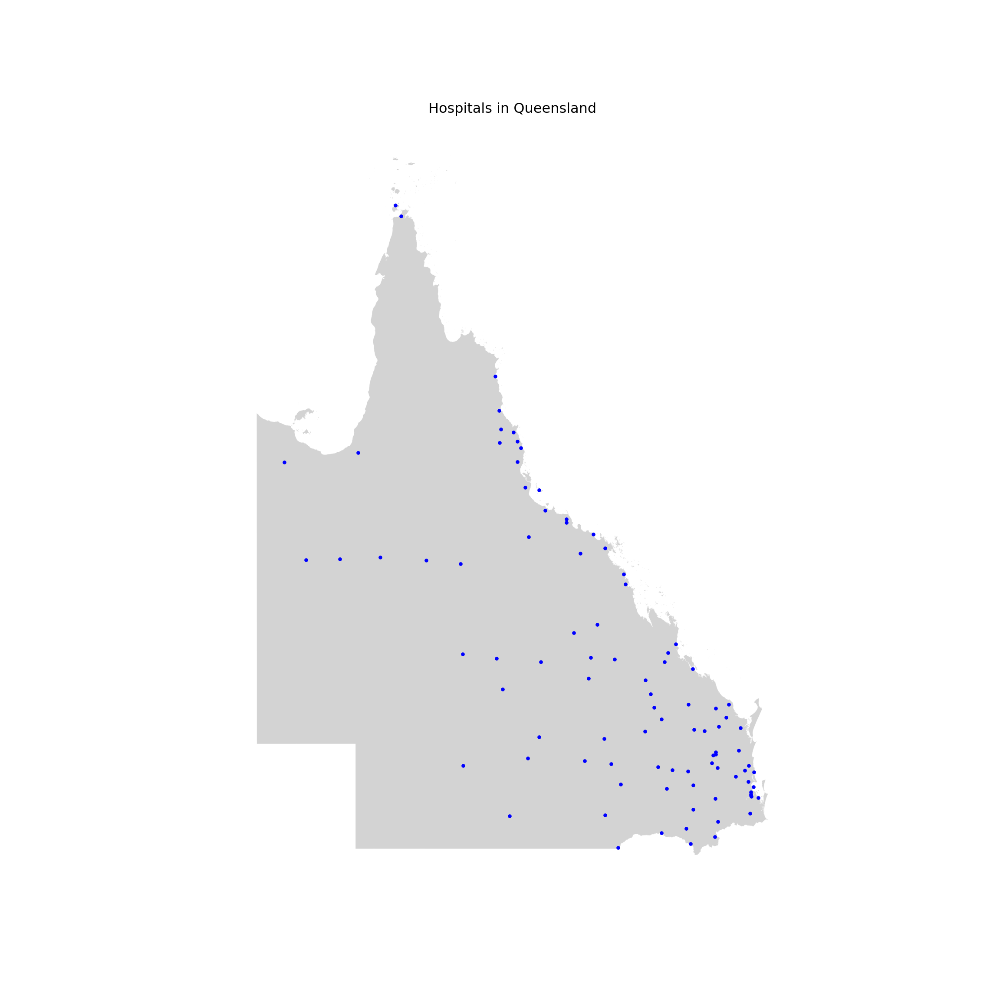
2.15 Open Street Map
This exercise loosely follows the wonderful tutorial created by Carlos Cilleruelo.
It builds off the OSMnx package that allows us to download spatial data from OpenStreetMap.
import osmnx as ox
center_point = (-37.81214, 144.96246)
G = ox.graph_from_point(center_point, dist=15000, retain_all=True, simplify = True, network_type='all')
#place = ["Melbourne, Australia"]
#G = ox.graph_from_place(place, retain_all=True, simplify = True, network_type='all')
# Unpack the data
u = []
v = []
key = []
data = []
for uu, vv, kkey, ddata in G.edges(keys=True, data=True):
u.append(uu)
v.append(vv)
key.append(kkey)
data.append(ddata)
# Lists to store colors and widths
roadColors = []
roadWidths = []
for item in data:
if "length" in item.keys():
if item["length"] <= 100:
linewidth = 0.10
color = "#a6a6a6"
elif item["length"] > 100 and item["length"] <= 200:
linewidth = 0.15
color = "#676767"
elif item["length"] > 200 and item["length"] <= 400:
linewidth = 0.25
color = "#454545"
elif item["length"] > 400 and item["length"] <= 800:
color = "#bdbdbd"
linewidth = 0.35
else:
color = "#d5d5d5"
linewidth = 0.45
if "primary" in item["highway"]:
linewidth = 0.5
color = "#ffff"
else:
color = "#a6a6a6"
linewidth = 0.10
roadColors.append(color)
roadWidths.append(linewidth)
for item in data:
if "footway" in item["highway"]:
color = "#ededed"
linewidth = 0.25
else:
color = "#a6a6a6"
linewidth = 0.5
roadWidths.append(linewidth)
#Center of the map
latitude = -37.81214
longitude = 144.96246
#Limit borders
north = latitude + 0.15
south = latitude - 0.15
east = longitude + 0.15
west = longitude - 0.15
bgcolor = "#061529"
fig, ax = ox.plot_graph(G, node_size=0, bbox = (north, south, east, west),
dpi = 300,bgcolor = bgcolor,
save = False, edge_color=roadColors,
edge_linewidth=roadWidths, edge_alpha=1)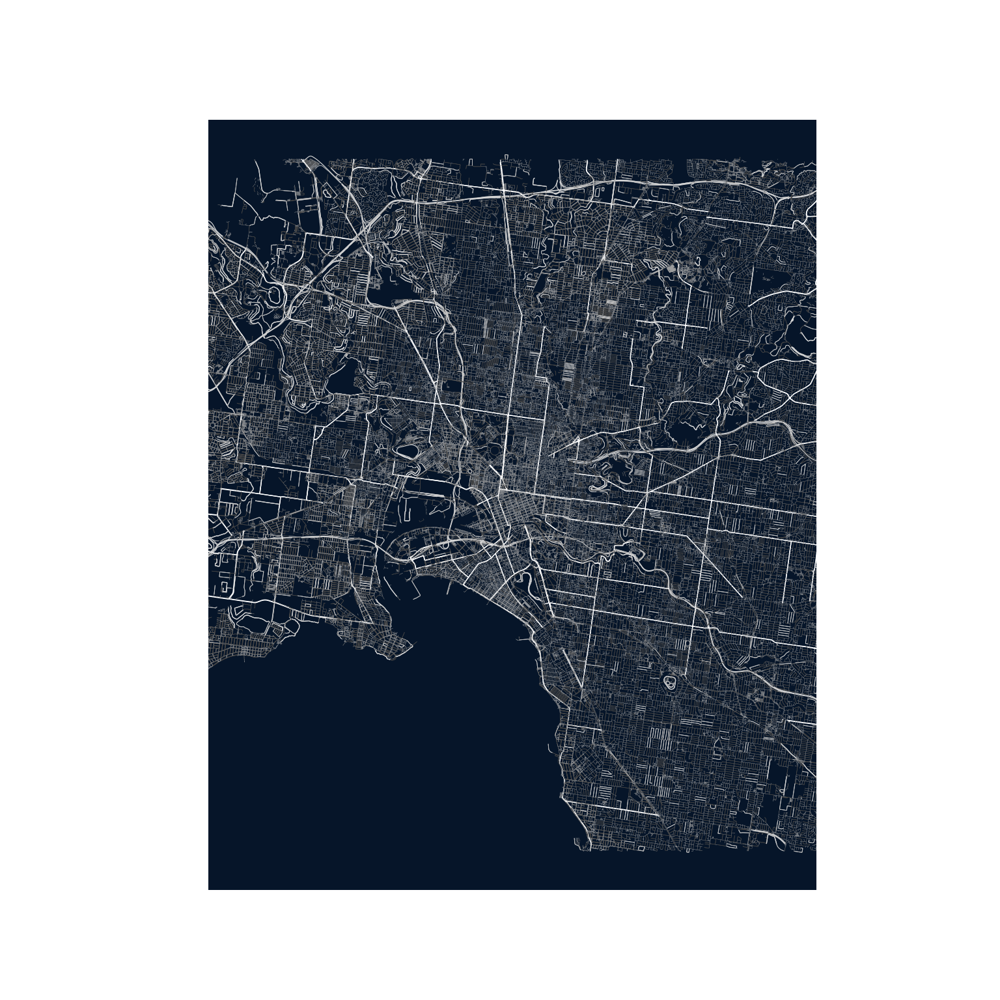
fig.tight_layout(pad=0)
fig.savefig("madrid.png", dpi=300, bbox_inches='tight', format="png",
facecolor=fig.get_facecolor(), transparent=False)
fig, ax = ox.plot_graph(G, node_size=0,figsize=(27, 40),
dpi = 300,bgcolor = bgcolor,
save = False, edge_color=roadColors,
edge_linewidth=roadWidths, edge_alpha=1)
fig.tight_layout(pad=0)
fig.savefig("madridPoster.png", dpi=300, format="png", bbox_inches='tight',
facecolor=fig.get_facecolor(), transparent=False) We can also add a water layer for the map above (and combine them in photoshop or similiar)
import networkx as nx
import osmnx as ox
center_point = (-37.81214, 144.96246)
G1 = ox.graph_from_point(center_point, dist=15000, dist_type='bbox', network_type='all',
simplify=True, retain_all=True, truncate_by_edge=False,
clean_periphery=False, custom_filter='["natural"~"water"]')G2 = ox.graph_from_point(center_point, dist=15000, dist_type='bbox', network_type='all',
simplify=True, retain_all=True, truncate_by_edge=False,
clean_periphery=False, custom_filter='["waterway"~"river"]')Gwater = nx.compose(G1, G2)
u = []
v = []
key = []
data = []
for uu, vv, kkey, ddata in Gwater.edges(keys=True, data=True):
u.append(uu)
v.append(vv)
key.append(kkey)
data.append(ddata)
# List to store colors
roadColors = []
roadWidths = []
# #72b1b1
# #5dc1b9
for item in data:
if "name" in item.keys():
if item["length"] > 400:
color = "#72b1b1"
linewidth = 2
else:
color = "#72b1b1"
linewidth = 0.5
else:
color = "#72b1b1"
linewidth = 0.5
roadColors.append(color)
roadWidths.append(linewidth)
fig, ax = ox.plot_graph(Gwater, node_size=0,figsize=(27, 40),
dpi = 300, save = False, edge_color=roadColors,
edge_linewidth=roadWidths, edge_alpha=1)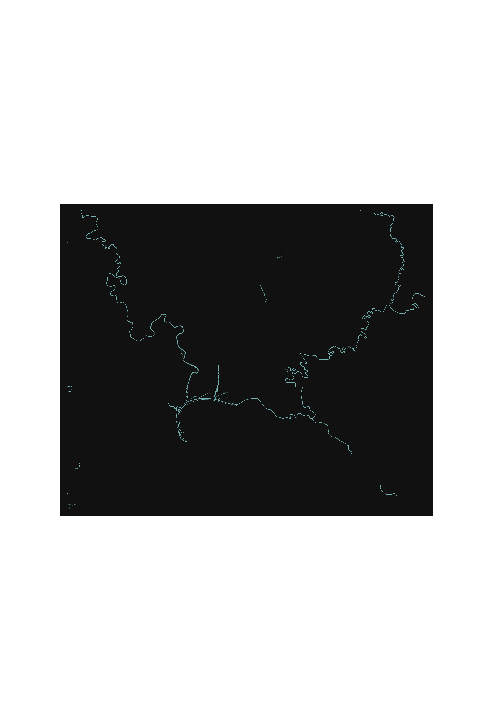
fig.tight_layout(pad=0)
fig.savefig("water.png", dpi=300, format="png", bbox_inches='tight',
facecolor=fig.get_facecolor(), transparent=True)